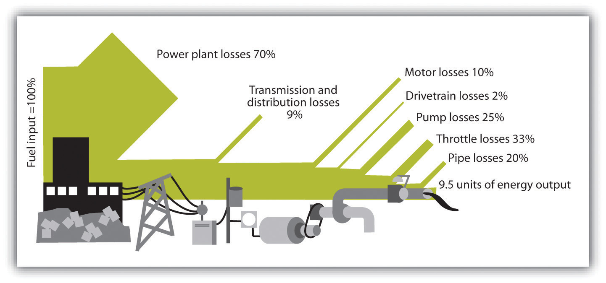
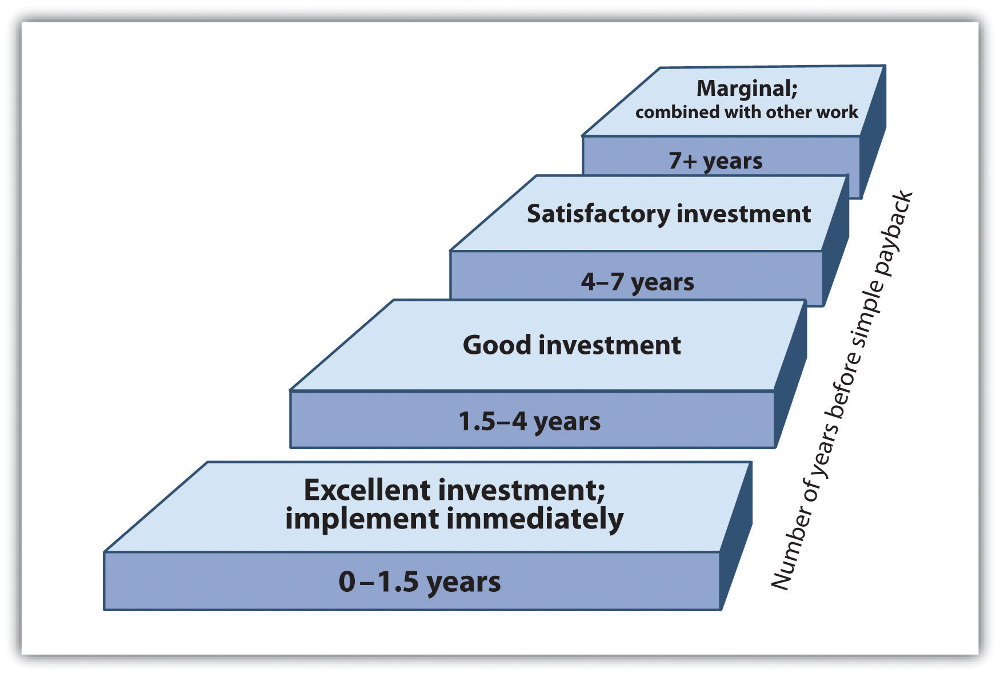

The next case is Hermes Microtech.This case was prepared by Batten fellow Chris Lotspeich in collaboration with author Andrea Larson. Andrea Larson and Chris Lotspeich, “Greening” Facilities: Hermes Microtech, Inc., UVA-ENT-0054 (Charlottesville: Darden Business Publishing, University of Virginia, 2004). Case can be accessed through the Darden Case Collection at https://store.darden.virginia.edu. Created as an amalgam of various company experiences, this case shows the decision-making complexity of building design and construction. The viewpoints of various participants provide insights into why sustainability concerns change decision processes and therefore can be so difficult for conventional organizations.
Heather GlenName has been changed. This case is an amalgamation of different business scenarios that case researcher/writer Chris Lotspeich created. The case is not about one single company and none of the names are real; note tongue-in-cheek choice of names. pushed back in her chair in her office at Hermes Microtech Inc., which gave her a commanding view of the books, binders, notes, and messages piled around her computer. The sunset was fading out over the Pacific, and as the last of her colleagues left, she welcomed the quiet opportunity to contemplate the task before her. Hermes CEO Alden Torus had just approved the most important project in Glen’s career to date, and she didn’t want to waste any time getting started. Glen had one month to organize an initial meeting of all key participants involved in creating and building Hermes’s new headquarters. For the first time, the company would bring together professionals from each phase of facilities design, construction, and operation to initiate project planning, and Glen would run the meeting. Although she was not the construction project manager, Glen was going to try to change the way her company built and ran its facilities to make them more environmentally friendly—and in the process transform the company itself.
Much had happened in the eighteen months since Glen had been appointed special projects coordinator by Sandy Strand, Hermes’s executive vice president of environment and facilities (E&F). Strand had asked her to lead efforts to make environmental quality a higher priority in the company’s buildings and facilities, a goal the CEO shared. Glen’s work in implementing energy-efficiency improvements at one of their microchip factories had produced mixed results. She learned a great deal about the technical potential for improvement from that pilot project, but her most valuable lessons concerned the organizational dynamics of the design-build effort. She realized that the most important factors for success—as well as the greatest challenges—lay in renovating the decision-making process rather than in different design and technology choices.
As dusk fell and the cubicles outside her office sank into shadow, photo sensors increased the brightness of the fluorescent light fixtures above Glen’s desk. She sipped another mouthful of coffee to stave off any drowsiness that might follow the meal she had just shared with Torus and Strand. Torus had called the dinner meeting to discuss how best to make the company’s next planned facility an environmentally friendly or “green” building. He wanted that to happen because he believed it would benefit the company, and he had supported Strand and Glen’s efforts. Yet Torus knew it would be a challenge to change the way the organization went about the design-build process.
“I am realistic about the constraints on my ability to effect change on this topic,” Torus had told them. “My time and attention are consumed with more traditional core business issues. I can make it clear to others that I support the goal of environmental improvements, but I need to rely on you to make it happen.” Torus asked Strand and Glen to suggest how best to proceed. He liked Glen’s proposal that everyone involved in the full life cycle of the building join in an initial integrated design workshop to initiate the project. “I can’t spare the time to attend the full meeting, but I can kick it off with introductory remarks,” Torus said to her. “Send me a one-page memo with the three to five most important things you want me to say.”
After dinner, Glen had returned to the office to draft an e-mail invitation to workshop participants. In her mind’s eye, she saw their faces, and reviewed their roles in the project and in the greening efforts to date.
Hermes was a medium-sized microelectronics manufacturer based in California’s Silicon Valley. The company started as a military contractor but grew to focus on consumer electronics through a series of mergers, acquisitions, and spin-offs. It made a mix of microchips spanning a range of capabilities and applications, from complex and costly chips for personal computers and cellular phones to simpler, cheaper devices for consumer appliances and automobiles. Hermes was essentially a component maker; almost all its customers were original equipment manufacturers (OEMs). Its ten manufacturing facilities, three R&D laboratories, and twenty sales offices in the United States, Europe, and Asia employed ten thousand people and generated annual revenues of $1 billion, with a net profit of $100 million.
Hermes CEO Alden Torus had been with the company since its founding twenty-five years earlier. The son of immigrants, he had started in the product development department and worked his way up through the ranks. Torus was an effective and charismatic engineer with a good head for business strategy and an encyclopedic memory for detail. He epitomized the corporate culture at Hermes: hardworking and production focused, he put in long hours to help develop and launch new products. Torus understood the importance of the first-mover advantage in the fast-paced microelectronics industry. Innovation was highly valued at Hermes, and product R&D was a spending priority.
Microchips were a commodity, competition was stiff, and profit margins were relatively narrow. The industry’s business cycle was highly variable, typified by regular and significant swings in price and profits. The driving influence was the rapid pace of technological development, characterized by Moore’s Law, which says computing processing power doubles every eighteen months. Racing each other as well as technical evolution, makers churned out increasingly sophisticated products, shrinking both transistor sizes and product development periods. Time to market was a critical competitive factor. The time available for new product launches did not often exceed eighteen months, including process and yield improvements. The sector was sensitive to macroeconomic conditions, particularly consumer spending. More than 85 percent of Hermes’s revenues came from chips embedded in consumer products.
Another influence on supply and demand fluctuations was the uneven or “lumpy” process of step function increases in production capacity. Microchip manufacturing was capital intensive, and new fabrication facilities—“fabs”—took many months to bring online. When chip demand rose far enough, competing manufacturers responded quickly and invested in new capacity. Those fabs tended to come online at about the same time; the surge in supply depressed prices, inventories built up, and the market slumped. Eventually demand and prices rose again, followed by a new round of investment in manufacturing capacity for the latest products.
Chip fabs were costly and complex. Microchips were made on silicon wafers in a series of steps that were carried out within high-tech devices called tools, each of which cost millions of dollars. The tools operated inside carefully climate-controlled environments called clean rooms. Microelectronics production was very sensitive to disruption and contamination by microscopic particles. Line stoppages could ruin production batches and cost more than $1 million dollars per day or as much as tens of thousands of dollars per minute for some product lines. Clean rooms were isolated seismically from the rest of the fab on dedicated support pillars, so that vibrations from minor earthquakes or even nearby truck traffic did not disrupt the tools. Process water was deionized and highly filtered before being piped into the clean room and the tools.
Fabs had extensive HVAC systems with high-performance filters to maintain the clean room’s temperature, humidity, and quantity of airborne particulates within stringent parameters. The air handlers, fans, pumps, furnaces, and chillers were located outside the clean room and delivered conditioned air and cooling water into the clean room via ducts and pipes. Those HVAC systems typically made up 40–50 percent of a fab’s electricity consumption. Fab electricity use ranged from three million to fifteen million watts or megawatts (MW), depending on the size of the facility.
Microchip manufacturing involved numerous hazardous materials, toxic emissions, and energy-intensive processes. Maintaining worker safety and managing pollution was a critical function. Potentially dangerous emissions were highly regulated and strictly controlled. Traditionally, environmental health and safety (EHS) management and strategy had focused on end-of-the-pipe problems and solutions, such as treating acid-contaminated exhaust air before it was released into the atmosphere. More recently, increased attention and effort had focused on pollution prevention strategies that reduced dangerous emissions by changes in production processes. Such strategies could meet regulated emissions control requirements at less cost than end-of-the-pipe methods and often yielded economic benefits through waste reduction and other manufacturing improvements. Hermes’s environmental activities were representative of the industry in that regard. In the mid-1990s, Hermes consolidated the EHS department and the maintenance department into one E&F department.
CEO Alden Torus did not pay much attention to environmental issues during most of his career. Like most of his colleagues, he regarded pollution control as a cost of doing business, driven by compliance with ever-increasing government regulations. He considered such matters to be the responsibility of the environment and facilities department but neither a high priority for senior management nor a central element of corporate strategy. He maintained that perspective during his tenure as VP of production and his early years as CEO.
Torus’s perspective began to change when his young son developed a rare form of cancer. During the course of his son’s treatment, he discovered that several other children in his neighborhood had the same type of cancer. His teenage daughter was passionate about environmental issues and had often complained about the extent of environmental contamination in Silicon Valley, asking her father to do something about it. Chemical feedstocks and by-products of electronics manufacturing had contaminated groundwater at more than one hundred locations. Santa Clara County had twenty-nine federally designated “Superfund” toxic waste sites, the highest concentration in the nation. Torus began to wonder if that had anything to do with his son’s illness. His son recovered after long and difficult treatment, but other children with the same disease died. Although no link to any specific chemical or site was established, that family crisis prompted Torus to rethink his views on industrial pollution.
Prompted by his children, Torus began to explore new perspectives. His friend Sandy Strand, Hermes’s VP of E&F, had long been interested in the potential business opportunities described by leading advocates of the integration of ecology and commerce (see Figure 7.12 "Hermes Microtech Organizational Chart (Partial)" for an organizational chart). Strand introduced Torus to the writing of such thinkers as Paul Hawken, Amory Lovins, and William McDonough and the work of organizations such as The Natural Step, the Coalition for Environmentally Responsible Economies, and the World Business Council for Sustainable Development. Torus learned about new business tools and strategies, including environmental management systems, green design, and industrial ecology. He heard from other CEOs about businesses in a wide range of industries that were finding profit and competitive advantage through innovation and collaboration with leading practitioners. Soon Torus joined Strand in the belief that Hermes could realize many business benefits by incorporating more environmental and social factors with traditional economic considerations into what author John Elkington called a new “triple bottom line.”
Figure 7.12 Hermes Microtech Organizational Chart (Partial)

But where would they begin? Torus and Strand shared a long-term view of the transitional process of moving their industry (and the world economy) toward the vision of a more sustainable condition. Neither man advocated rapid change without regard to cost. They continued to believe that their priority was economic success and that building the business case for green business initiatives was essential. They recognized that they were well ahead of most of their colleagues on those issues and were pragmatic about the potential scope and pace of change, particularly within the managerial constraints of executive responsibility in a publicly traded company. They had limited time and attention to devote to a new strategic initiative, capital resources were perpetually constrained, and the company lacked experience with many of the promising approaches. Yet they wanted to start somewhere—and steadily, if slowly, develop momentum for organizational change.
Torus began by sharing his vision of the future with the company and the public and declaring his support for prudent green business initiatives. His advocacy did not require much of his time, but it provided crucial top-level support for the employees who would carry most of the responsibility for project implementation. Initial efforts would pursue incremental improvements toward clear, measurable objectives. Those efforts would be supported by education and training, recruitment of skilled staff, and outside expertise where necessary. Hermes had built its success on innovation and rigorous quality management.
Torus set two initial priorities: (1) development of a new, more environmentally friendly line of chips and (2) a 20 percent improvement in energy and water efficiency over five years. Those programs would have to pay for themselves within five years.
The green chip project would be implemented by the R&D and operations divisions of the production department, headed by Executive VP of Production Christopher “Chip” Smith. In addition to traditional areas of performance improvement, the new microprocessor had a design goal of using at least 15 percent less electricity than the previous model, which would appeal to OEM buyers and consumers because it would extend the battery life of portable devices such as laptops and cell phones. Manufacturing process improvements would reduce waste and toxic pollution. Hermes would advertise these attributes to differentiate their product, attract environmentally conscious consumers, and boost sales, thereby (hopefully) paying for the effort.
The energy and water efficiency effort would be implemented by the facilities maintenance division of the E&F department and the operations division of the production department. The program would pay for itself through avoided costs. The program would be headed up by Heather Glen, then a special assistant to Strand. At the time, Glen was a bright young electrical engineer and recent MBA graduate who had sought a position with Hermes because she had heard about the company’s greening efforts and wanted to work in that field. She had been at Hermes for one year and had spent most of that time pulling together an overview of all its fabs’ environmental performance and energy and water use. She had also initiated a pilot program to save energy through lighting retrofits at the company’s headquarters and two other office spaces, which were successful though small in scope.
Strand hired a team of consultants led by Rocky Mountain Institute (RMI), a nonprofit research and consulting organization. He had seen a lecture by Amory Lovins, RMI’s CEO and a resource efficiency pioneer, in which Lovins described RMI’s energy-efficiency work in fabs that saved up to half of the HVAC energy cost-effectively. He invited Lovins to meet with Torus, who agreed to a pilot effort at Hermes’s F3 fab near Dallas, Texas. Glen was designated project coordinator and liaison with RMI.
F3 was chosen because it was one of the most energy-intensive fabs in the company, water costs were relatively high, and a significant expansion was planned. The facility was built in the early 1970s by another firm and had been acquired by Hermes in the late 1980s. A renovation called Phase I was done in the late 1990s to accommodate a new production line, with only minor changes to the original HVAC system. A new addition was planned with another clean room and dedicated HVAC utilities, called Phase II. The initial drawings for Phase II had been completed by Expedia Design Company, Hermes’s long-standing architectural and engineering design vendor. EDC was a fab design vendor to several firms in the industry and had a reputation for speed and competitive fees.
The RMI consulting team was led by Bill Greenman, an architect with an MBA and a background in green design. Technical services were provided by Peter Rumsey and John Blumberg from Rumsey Engineers, an engineering design firm and frequent RMI partner that specialized in energy-efficient HVAC systems for clean rooms and green buildings. Their objective was to briefly survey F3 to identify existing opportunities for improvement and conduct a streamlined design review of Expedia’s plans for the rehab. The deliverable was a report with a list of recommendations that would be practical but general in nature, rather than a detailed engineering study based on performance measurements. The report would not include design plans or payback calculations. That introductory visit was intended to identify potential areas of improvement for further investigation and to provide an opportunity for the company and the consultants to learn more about each other. The limited scope of work also kept the consulting fees low.
Glen had been to the F3 site only once before, although she had worked with its facilities staff on her energy performance assessment. She flew from the company’s headquarters in the Silicon Valley to Texas and met the RMI team there for the two-day survey. The team spent the first morning describing their approach and being briefed on the facility. They then toured the site for the rest of that day and much of the second, working with the chief engineer and facilities staff to understand HVAC and controls systems, water use, and operating procedures. At the end of the second day, the team presented its initial conclusions and recommendations in a meeting attended by facilities staff, the site’s general manager Regina Shinelle, Expedia’s Phase II project manager Art Schema, and Strand, who flew in for the occasion.
The RMI team estimated that low- and no-cost changes to F3’s current operations could save up to 10 percent of the HVAC electricity almost immediately, such as utilizing evaporative “free” cooling in dry periods by operating all the cooling towers in parallel at low speed to reduce reliance on electric chillers. Another 15–25 percent savings were attainable with modest retrofit investments and estimated paybacks of two to three years, including pumping and fan system upgrades. Significant investments could reduce site HVAC energy use by more than 50 percent, requiring changes to Expedia’s Phase II design to allow consolidation of the two clean rooms’ independent process cooling systems into a centralized plant serving both buildings. The estimated payback period would be at least five years if it were to be conducted as a retrofit, once Phase II had been completed, or much sooner if combined with proposed Phase II energy-efficiency improvements.
The RMI team noted that significant opportunities for energy efficiency were not captured by the current Phase II design. These included larger low-friction air handlers with smaller fan motors and variable-speed drives, high-performance cooling towers, heat-reflective coatings on rooftop air intake ducts, and upgraded sensors and controls. Such measures would decrease HVAC energy use and cost by 30 to 60 percent, with paybacks ranging from immediate to several years depending on the measure. They would also increase construction costs, although some component capital costs would fall due to smaller equipment such as motors and chillers. The extent of this proposed redesign would be significant and would take weeks or even months.
With the exception of the centralized cooling plant, most recommended measures would not interrupt production and involved no intrusion into the clean room space. All the suggested methods had been demonstrated within the industry but not all in one place, and few had been tried within Hermes. RMI suggested that Hermes establish energy performance benchmarks to be used as guidelines for both existing fab operations and new design specifications.
Rumsey Engineers’ Blumberg worked on water efficiency measures and proposed a method for reclaiming wastewater for evaporative cooling. But when he investigated techniques for reusing some of the acid rinse water that drained from a tool, the production manager rebuked him for interfering with manufacturing matters and the idea was dropped.
The Phase II review also noted that Expedia’s design was an almost exact replica of another Hermes fab that was more than ten years old, which itself was based on blueprints from the 1970s. That became apparent when the team asked about a piping diagram showing an unusual zigzag in midair, and a facilities engineer named Steve Sparks replied that there was a structural pillar in that location in the fab these plans were drawn from—a pillar absent in Phase II. It did not appear to the RMI team that any performance improvements had been incorporated into the successive iterations of that design.
Such “copy exactly” practices were common in the microelectronics industry. Microchip manufacturing was extremely complicated. The sequence involved thousands of process variables and chemical interactions that were so complex as to defy full comprehension. Performance parameters and specifications were exacting, as minor deviations could be disastrous, and if problems occurred they needed to be isolated and identified. Time-to-market deadlines were unforgiving, and meeting them required an extraordinary level of control over process variables. Therefore, when something worked, it was copied exactly. A pilot production line for new product development was essentially “cloned” in numbers to create a high-volume manufacturing facility. That mind-set shaped all aspects facilities design, even areas outside the clean room that did not require such stringent inflexibility. “Copy exactly” reduced fab design effort, time, and cost but also hindered the adoption of technological and process improvements, including energy-conserving features.
A few weeks after the survey in Texas, RMI and Rumsey Engineers submitted a brief report (see Table 7.3 "Executive Summary of Recommendations from Rumsey Engineers’ Review of Baseline Ventilation System Design for Hermes Office Building Renovation") summarizing their observations and recommendations, which was circulated at the site and among senior management including Strand, Torus, and Smith. Meetings were held to discuss the recommendations and strategies for implementation. The reactions were mixed.
Table 7.3 Executive Summary of Recommendations from Rumsey Engineers’ Review of Baseline Ventilation System Design for Hermes Office Building Renovation
| Specifications | Baseline Design Criteria | Proposed Design Criteria—Larger Ducts | Proposed Design Criteria—Larger Ducts and Lower Face Velocity Air Handler |
|---|---|---|---|
| Duct spec | Avg. diameter is 36 in. | Avg. diameter is 40 in. Increase duct area 20% (reduce external pressure loss by 36%). | Avg. diameter is 40 in. Increase duct area 20% and increase air handler size (reduce total pressure loss by 36%). |
| Design face velocity (fpm) | 500 | 500 | 400 |
| Design flow (cfm) | 50,000 | 50,000 | 50,000 |
| Design total static pressure (in.) | 4.5 | 3.6 | 2.9 |
| Internal pressure loss (AHU; in.) | 2 | 2.0 | 1.3 |
| External pressure loss (ducting; in.) | 2.5 | 1.6 | 1.6 |
| Fan efficiency (%) | 70 | 70 | 70 |
| Motor efficiency (%) | 90 | 90 | 90 |
| Operating face velocity (fpm) | 500 | 400 | 400 |
| Operating flow (cfm) | 50,000 | 32,500 | 32,500 |
| Operating total static pressure (in.) | 4.5 | 2.0 | 1.7 |
| Internal pressure loss (AHU; in.) | 2 | 1.1 | 0.8 |
| External pressure loss (ducting; in.) | 2.5 | 0.9 | 0.9 |
| Fan efficiency (%) | 70 | 70 | 70 |
| Motor efficiency (%) | 90 | 90 | 90 |
| Motor HP | 60 | 50 | 50 |
| Motor VFD | No | Yes | Yes |
| Annual operating hours | 3,560 | 3,560 | 3,560 |
| Annual energy use (kWh) | 149,000 | 44,000 | 37,000 |
| Annual energy cost ($) | 22,350 | 6,500 | 5,550 |
|
Assumptions: Building Size = 50,000 square feet (SF) Design CFM = 50,000 cubic feet per minute (cfm) Operating CFM = 32,500 cfm for proposed design (with VFD); 50,000 cfm for base case (without VFD) Operating hours per year = 3,560 (10 hours per day) |
|||
| Case 1 | Case 2 | Case 3 | |||
|---|---|---|---|---|---|
| Baseline design | Proposed design—larger duct case | Proposed design cost (or savings) | Proposed design—larger duct and larger air handler case | Proposed design cost (or savings) | |
| Capital costs | |||||
| Duct cost ($) | 120,000 | 130,000 | 10,000 | 130,000 | 10,000 |
| Fan motors VFD cost ($) | 10,000 | 10,000 | 10,000 | 10,000 | |
| Air handler cost ($) | 60,000 | 60,000 | 0 | 63,000 | 3,000 |
| Marginal cost ($) | 20,000 | 23,000 | |||
| Operating costs | |||||
| Fan motor energy cost/y ($) | 22,350 | 6,500 | (15,850) | 5,550 | (16,800) |
| Payback | $20,000 ÷ $15,850 per yr. = 1.3 yrs. | $23,000 ÷ $16,800/yr. = 1.4 yrs. | |||
| ROI | $15,850 ÷ $20,000 = 79% | $16,800 ÷ $23,000 = 73% | |||
The RMI team had been greeted with initial skepticism by the site’s facilities staff members, who were wary of outside interference, had never heard of RMI, and were confused about the unusual nonprofit-corporate consulting partnership. Chief Engineer Tom Dowit had been a particularly reluctant participant. It was rumored that Dowit had called the survey “just another far-fetched scheme of those environment division idealists” that was going to cost his facilities division money and distract him from his primary job of ensuring that the production division could maximize output. He was openly skeptical during RMI’s initial presentations, although as the survey progressed, he grudgingly acknowledged the value of some of the team’s observations, stating at one point that he would have made some of the same improvements if he’d been given permission and funding. But he grew defensive—and at one point openly derisive—during the final presentation as the team described opportunities to save tens of thousands of dollars.
Glen realized that Dowit might have feared that the consultants were making him look bad by finding large cost savings he had not uncovered himself in recent years. But she also understood why he might have taken a highly cautious approach to new techniques. The facilities engineering staff had a difficult job, with a great deal of responsibility for maintaining highly complex and sensitive production equipment. They had limited input into tool selection and operation, yet when something went wrong, they often got the blame. The facilities department budget was constantly squeezed, pressuring engineers to cut corners. Many production managers viewed facilities as an overhead cost center that played a subordinate support role to manufacturing’s revenue generation.
The rest of Dowit’s staff agreed that many of the recommendations were technically feasible and had already successfully implemented some operational changes since the visit. Their initial skepticism about “a bunch of academics who were coming here to write on blackboards and waste our time” subsided over the course of the survey as the RMI team’s skills became apparent, and most people quickly came to respect the consultants’ abilities and ideas. The staff would need additional money for retrofits to capture further savings. A few of the consultants’ ideas had been suggested in the past by site facilities staff, including measures used at other Hermes fabs, but most had been rejected because they did not meet the site’s requirement that retrofit investments have a maximum payback period of eighteen months.
Facilities Engineer Steve Sparks enthusiastically supported the energy-efficiency efforts and confided in Glen. He lamented the inefficiency of F3’s older equipment, pointing out that Dowit kept it running on a “shoestring budget.” Dowit blamed the spending constraints on the comptroller, but Sparks suspected that Dowit was also currying favor with the production department by minimizing O&M spending. Sparks had worked at another fab just after Dowit had left there as chief engineer (the same facility Expedia had used as a template for Phase II). Sparks thought that Dowit’s cost cutting might have helped him get promoted to this position at F3, but it had also run down the mechanical systems and left his successor with deferred upkeep costs. “To be fair,” Sparks added, “Dowit is not unusual in this careful approach, he’s good at it and he has been rewarded for it. This is typical of the facilities culture at Hermes.”
F3 General Manager Shinelle had little interest in any project that diverted attention from production and no interest in slowing down the Phase II expansion. She did not meet the RMI team until their final presentation and did not say much then or in subsequent meetings; what she did say tended to agree with Dowit. “This facility works, and energy is 2 percent of the cost of our chips,” she said. “I can’t spend time worrying about it. We need to use our limited investment capital to get new, high-quality products quickly to market.” Glen had the impression that Shinelle participated only reluctantly and would not have done so at all if it wasn’t clear that Strand had requested she host the pilot energy survey. Ultimately, Shinelle agreed to direct Dowit’s staff to select “a few” of the more cost-effective measures that met the site’s eighteen-month payback criteria, and she would approve those facilities funding requests.
Nevertheless, Shinelle refused to make any changes to the Phase II design that would slow the project timeline. Nudged by Strand, she directed Dowit to check with Expedia and see if there was still time to order more efficient motors than the inexpensive but relatively low-efficiency types specified in the design—as long as the cost premium did not exceed 10 percent. “The production division can’t afford to pay more for this expansion,” she insisted. “We lose tens of thousands of dollars of sales revenue every week that we delay getting Phase II manufacturing up and running. We have to stay within budget and on schedule.” Glen understood that Shinelle’s annual performance bonus was probably tied to that very achievement and that in any event the facilities division would be paying the utility bills.
Expedia’s Art Schema had been unsure how to respond to the design review comments during the on-site presentation. Although his primary clients Shinelle and Dowit seemed to think that the RMI team’s input wouldn’t change much if anything about Phase II, Schema could see that Strand supported the consultants’ efforts. Schema limited his comments to polite expressions of interest in the findings and promised to give them detailed consideration.
Within a week of receiving the RMI report, Schema sent a critique of the design review to F3, and Shinelle e-mailed copies to Glen and Strand. Expedia’s point-by-point response acknowledged the merit of a few of RMI’s suggestions but dismissed most of the recommendations as too costly, impractical, or impossible. The tenor of the response was that half of RMI’s recommendations were off-base and the other half were nothing new to Expedia. Schema’s cover letter read in part: “Expedia provides superior reliability and security. Our architects and engineers have built our close relationship with Hermes by delivering economical designs that work, as proven in previous projects. We leverage our skills and experience to consistently deliver low bids and rapid turnaround times, which benefit both Hermes and Expedia. We are open to discussions about changes to design criteria at any time with you, our valued clients.”
Shinelle defended Expedia’s approach and service in her attached e-mail. “Expedia has always been there for us and has never let us down. They have played a key role in Hermes’s agility and speed in product development and launch. Let’s not mess up a good partnership with untested ideas.” It occurred to Glen that both Shinelle and Smith had risen through the ranks of the production department boosted by reputations as star managers of fab construction projects—success stories that Expedia had helped build. In addition, Shinelle’s product quality and yield record at F3 was unmatched across Hermes’s manufacturing sites for its consistency, and she had a reputation for bringing new products to market very rapidly.
Six months later, Glen and Strand regarded the F3 survey as only a partial success. On the upside, technical results were positive. F3 facilities staff had successfully implemented most of the RMI team’s low- and no-cost recommendations. Sparks and his colleagues were impressed by the new techniques, welcomed corporate-level support for investment in system improvements, and were openly supportive of the energy-efficiency efforts. They convinced Dowit to request that the RMI team return to conduct more detailed analysis of some of the more involved recommendations. The fact that Torus had mentioned the pilot effort at F3 in a companywide webcast address, praising the site manager and chief engineer’s efforts, helped their cause. But unlike the first visit, which was underwritten by Strand’s office, subsequent fees would have to come from the site’s operating budget. Shinelle agreed to allocate them in principle but said no such expenditures could be undertaken until the following quarter at the earliest.
On the downside, F3’s Phase II expansion project went ahead as designed. Some motor efficiency upgrades were incorporated at the last minute at minimal extra cost, but the scramble to change equipment orders at a late stage in a tight schedule resulted in some grumbling by Dowit and Schema.
Strand’s environment department had engaged the RMI team to conduct similar general surveys at two more sites in Oregon and the Silicon Valley, accompanied by Glen in each case. The visits occurred three months after the F3 survey, and the team’s recommendations had been submitted but not acted upon. Those visits had paralleled the experience at F3. The team worked with facilities division staff on energy improvements that did not risk interfering with production. (Manufacturing water efficiency was no longer investigated following Blumberg’s rebuke at F3.) Technical efficiency opportunities were similar; so, too, were the political dynamics. Some facilities staff members were skeptical, but receptivity increased as awareness of the RMI team’s capabilities spread by word of mouth and direct experience. Production staff members were more wary; the word going around the department was that the energy program was an expensive nuisance.
Expedia seemed to be torn about the energy program. Its design work was directly challenged by the consultants’ critiques, its managers’ personal networks and alliances were aligned with Hermes’s production department (the one that hired it), and its designers were not keen to devote a great deal of effort to restructure its cost-effective copy-exactly approach. However, Expedia also wanted to please its client and recognized that Hermes’s CEO was interested. Glen noted that Art Schema, the Hermes account manager at Expedia, had avoided directly criticizing the RMI team’s work—that had been left to subordinates—and had signaled his openness to discussing new frameworks for doing business. In a brief aside as a meeting broke up, he told Glen, “We can design more energy-efficient systems; Hermes has never asked us to.”
Glen saw her task as essentially intrapreneurial. She was trying to harness resources to realize a new vision of the future. She marveled at how difficult it was to be innovative even in a company built around the creation of new ideas, techniques, and products. She faced a big challenge in trying to change business as usual, pushing against a persistent headwind of inertia and resistance to new methods. The semiconductor industry was typified by a very cautious and conservative corporate culture, stemming from exacting technical and process requirements, safety risks posed by hazardous materials, the high cost of downtime, and brutal competition in a fast-moving marketplace. (It wasn’t for nothing that Intel CEO Andy Grove’s book was titled Only the Paranoid Survive.)
Glen had to persuade many people to change the way they did things, both with different departments at Hermes and with outside vendors. She sometimes felt like an outsider herself during the site visits; even colleagues from the facilities division of her own department viewed her as an environment division staffer from the corporate office. Glen was grateful that the RMI team could back up its claims with practical expertise. Her position afforded little formal authority to dictate change, although executive endorsement lent her informal authority, and her training provided only limited credibility with facilities engineers. The RMI team lacked authority but was building credibility with demonstrated skills, one site survey at a time, complementary to her strengths.
Her colleagues knew she had Strand and even Torus backing her, but executive time and attention was very limited, she was left to her own means to manage the process and implement change. Glen sensed that the production-focused skeptics in the opposing camp would respond positively to the energy program when she or Strand were present but would then return to the status quo as soon as the efficiency advocates weren’t looking, hoping they could wait it out until the CEO retired and the issue dissipated. She recalled the Chinese saying about that attitude among middle management: “Heaven is high and the Emperor is far away.”
Despite his authority as CEO and personal credibility as a successful manager and leader, Alden Torus could not afford to dedicate much political and social capital to any efforts not directly focused on commercial success. Yet his interest in sustainable business opportunities remained strong, and he wanted to choose his interventions carefully to provide the greatest leverage for change. If he was going to risk his reputation and get out ahead of his colleagues on an unfamiliar issue, he wanted it to count. He was pleased with the early phases of the energy and water efficiency efforts, although it was becoming clear that the process of organizational learning and transformation would not be rapid. He wanted to expand awareness of—and attention to—environmental dimensions of commerce that went beyond using resources more efficiently.
One strategy under consideration was to establish companywide emissions reductions targets for gases that contributed to climate change. Specified targets could provide coherence to energy-efficiency efforts across the company’s facilities and prevent individual sites from “cream skimming” only those opportunities with the most attractive paybacks—an approach that often rendered longer payoff measures uneconomic under current investment criteria. Torus suspected that bundling projects for investment would increase the average payback periods but yield larger overall emissions reductions. Internal emissions trading might further reduce the total cost of such efforts by directing funds to the highest-leverage opportunities.
Torus saw a good opportunity in the company’s decision to consolidate the corporate headquarters and western US sales offices into one location. He asked the board of directors to support construction of a green building and invited RMI’s Lovins and Greenman to the board meeting to describe the potential benefits. Green buildings used more environmentally friendly materials and design and construction practices and typically reduced utility bills by as much as 50 percent through energy and water efficiency. They did not have to cost more to build than conventional buildings, although they required careful design attention. The board was intrigued by research indicating that worker productivity typically increased in green buildings by an average of 5 percent, which would be even more valuable to the company than eliminating the utility bills entirely.
“But what constitutes ‘green’ building?” the board asked. Lovins and Greenman had said that each project was unique, and there were no simple standards to apply to a design, no Band-Aids that would make it green. However, third-party accreditation was available through the LEED rating system established in 2000 by the US Green Building Council (USGBC), a respected consensus coalition of stakeholders from all aspects of the building industry. LEED certification required that best practices be used in certain core aspects of building construction and operation. It provided a list of techniques and practices, most of which were rooted in existing industry standards. Designers and builders could incorporate features chosen from this menu of options to earn points toward certification. LEED provided a framework for action with defined objectives and established criteria for what was “green.” USGBC data from scores of completed projects indicated that the basic level of certification added 0–5 percent to a building’s initial cost (not factoring in typical operating cost savings), and the primary factor in that variability was the skill and experience of the design-build team. LEED was well received in the industry, grew rapidly, and within three years of its release was being applied to more than 5 percent of all planned commercial and institutional construction and major renovation projects in the United States.
The board approved the project. Torus believed the building would provide a potent educational symbol of the business benefits of green design and serve as a tool for organizational learning. He thought it likely that the new headquarters’ innovative design approaches would appeal to Hermes’s corporate culture, particularly that of the production department. He liked the idea that strategic planning and new product conceptual development would occur in a unique facility.
As with other Hermes facilities, the new office building development was being managed by the production department. (Most Hermes buildings projects were production related, so to simplify administration the production department oversaw all new construction.) Torus had decided to make the new headquarters a green building after the project had already begun. The plan had been to completely renovate a four-story, fifty-thousand-square-foot office building in the Silicon Valley. The project management team had been designated, and the design and construction contractors had already been chosen based on their conceptual design: Hermes’s traditional partners, Expedia Design Company and Advanced Building Services (ABS). Art Schema was the Expedia project manager, and William Ditt was the ABS construction manager. Both had worked extensively with Hermes facilities in the past but had minimal experience with green building techniques. The next project milestone was to be a review of Expedia’s initial plans for the building core and utilities, but Torus had put the process on hold when he decided to seek board approval to make the renovation a LEED building project. It was not too late to change the design to meet that new objective.
Torus decided to build on both the momentum of the energy-efficiency program and RMI’s program. RMI and Rumsey Engineers would be retained as design consultants, based on their growing credibility in the company and reputation as leaders in the green design field. Glen was tasked with leading the greening effort toward the goal of attaining LEED certification and continuing her role as liaison to the RMI team.
Executive VP of Production Chip Smith had chosen Regina Shinelle as project manager and Tom Dowit as chief engineer. Glen could not help wondering whether that was a positive development and what Smith’s true intentions were. Smith had not revealed much about his opinion of the greening efforts; although he acted supportive in Torus’s presence, on most issues he embodied the production department’s perspective. Now Glen would be working with the two people who had presented the most stubborn resistance to her efforts and who did not share her priorities. If the renovation failed to attain LEED certification or performed poorly, it would be a major setback to the sustainability program. But if the collaborative effort resulted in an economical, high-performance LEED building, it would bring positive recognition to all participants and perhaps create greater buy-in for sustainability efforts among the skeptics companywide.
Glen was pleased that Steve Sparks had been named facilities director for the new headquarters. He had been the most enthusiastic supporter of the efficiency efforts at F3, and his persistent efforts had played a key role in successful implementation of the recommended measures, despite more hesitant colleagues. Glen had suggested to Strand that Sparks would be an ideal internal candidate for the position. Sparks was excited about the promotion and the opportunity to be more involved in green design.
Glen’s primary proposal as the project’s sustainability coordinator was to arrange an integrated design process called a charrette. This multidisciplinary-facilitated meeting would bring together project participants, stakeholders, and outside experts in the same room (often around the same table) at the earliest practical point in a project. The goal was to clarify desired outcomes, identify obstacles, and devise strategies for attaining the best overall result. That integrative process helped participants to understand their differing perspectives and incentives, exchange ideas, build trust, work out problems, and create consensus. The approach took some time, but the investment of extra effort could significantly improve plans and specifications, streamline construction, reduce total costs, and increase building performance. “An axiom of design is that all the big mistakes are made on the first day,” Greenman told Glen. “Most of a building’s life-cycle cost is determined by the tiny fraction of the budget spent on initial design. Carpenters know it makes sense to measure twice and cut once. A charrette helps us to do that.”
The charrette was to last for two days and would be held in Hermes’s R&D center conference facilities. Hermes R&D staff had used similar techniques for product design, but it had never been tried in a facilities project. Participants commented that never before had all the parties spanning the service life of a Hermes building project met together simultaneously.
The meeting would begin with team introductions, followed by presentations on green design and LEED by the RMI team (which had obtained excellent results in past charrettes). Glen planned to describe the list of LEED requirements and the credit areas that she thought were best suited for exploration. There were several areas she identified as readily achievable and many more worthy of deeper exploration. The group would pick an initial set of LEED credit areas to pursue. That would take much of the first day.
The most detailed technical subject would be a collective consideration of HVAC design alternatives. Rumsey Engineers had reviewed the preliminary design drawn up by Expedia before the green objectives were set—now called the baseline case. Rumsey had submitted a proposal outlining recommendations for increasing the ventilation system efficiency. It involved spending more money on construction to save money on operation. The executive summary of recommendations and estimated costs and benefits was to be circulated to each participant. That discussion would begin on the first day and carry over to the second day if necessary.
The last and most difficult topic, but perhaps the most important, would concern potential policy and procedural changes that might foster more efficient facilities investments. Hermes’s traditional approach to requiring, financing, designing, building, and operating its facilities was functional but not optimal. The energy-efficiency program of retrofit improvements had proven that there was widespread waste of energy and capital within the company’s facilities. It had also highlighted aspects of the process that hindered improvement. It was in the interest of management and shareholders to create a more efficient process.
Most of those issues were not unique to Hermes but were characteristic of the industry. Buildings were made in a collective but not well-optimized production process. As Greenman put it, “If a camel is a horse designed by a committee, than most buildings are camels.” Some decisions produced short-term savings for certain participants but degraded building performance or imposed long-term costs on the owners and occupants. Usually those choices made business sense to each decision maker and were not intended to cause problems elsewhere. Those challenges were a function of the rules of the game, and it was worth exploring whether changing any of those rules would produce better buildings. Glen’s discussion would examine the participants’ roles, incentives and disincentives, and the impact of financial and investment criteria. It had the potential to make some participants uncomfortable but also to yield significant process improvements.
Those thoughts were racing in Glen’s mind on the night Torus had approved the charrette. She was excited and a little anxious as she set out to draft a meeting invitation and brief description. She hoped that the charrette would reduce rather than inflame any latent (or blatant) tensions and conflicts among participants. Greenman had assured her the process usually worked surprisingly well, but she could see how achieving consensus might also seem like herding cats. She considered the cast of characters she now had to work with, each representing a different organization or department, and made notes summarizing her interpretation of each participant’s perspective going into the project.
She needed to identify the obstacles and opportunities in the group dynamic and select strategies that provided the highest leverage for change. The CEO had offered her the opportunity to try a few new approaches and policies that he could announce in his introductory remarks. She thought that a small number of well-targeted measures could “change the rules of the game” for key participants in the design-build process by providing different incentives or by removing important disincentives. That would help steer the group’s decision toward a successful outcome for this project, and perhaps for future facilities as well.
Many managers are unaware of the strategic advantages and cost savings possible through systems analysis applied to material, energy, and water use in building design and operation. This section provides whole-systems strategies for improving resource efficiency in industrial and commercial buildings.This background note was prepared by Batten fellow Chris Lotspeich in collaboration with author Andrea Larson. Andrea Larson and Chris Lotspeich, Environment, Entrepreneurship, and Innovation: Systems Efficiency Strategies for Industrial and Commercial Facilities, UVA-ENT-0052 (Charlottesville: Darden Business Publishing, University of Virginia, 2008). Note can be accessed through the Darden Case Collection at https://store.darden.virginia.edu. Systems thinking and integrated, multidisciplinary methods are explained that can stimulate innovation in both the equipment (technical) systems that make up facilities as well as the human (organizational) systems involved in the design-build-operate process. Identifying and using key leverage points and systemic synergies can dramatically increase the performance of buildings and the groups of people who make and run them. In practice those approaches have saved money, reduced environmental impacts, improved worker health and productivity, attracted new employees, greatly decreased operating costs while adding little or nothing to initial costs, and in some cases even decreased capital costs.
Resource efficiency (also called “resource productivity” and “eco-efficiency”) provides cost-saving methods for reducing a company’s environmental and health impacts. Businesses consume resources to deliver goods and services and to create socioeconomic benefits. Primary resource inputs are materials, water, and energy. Their use directly links industrial activity to the earth through extraction, pollution, and waste generation. (Labor, money, and time are also economic inputs, although environmental and health impacts associated with their use are generally more indirect; we will focus on physical and energy resource use.) In any firm that manages for maximum efficiency, the life-cycle resource intensity and environmental “footprint” of a given product or company is evaluated across the supply chain, from the natural resource base through manufacturing and use to ultimate disposal or recycling.
Ideally resource efficiency enables the delivery of goods and services of equal or better quality while reducing both the costs and impacts of each unit of output. Systems efficiency strategies go beyond conservation by boosting productivity and differentiating the firm. When efficiency measurement stimulates innovation, doing more and better with less fosters revenue growth. Innovation and the entrepreneurial initiative that drives it result in the delivery to market of new goods and services with superior performance or other attributes that out-compete existing products and industries.
This Schumpeterian “creative destruction” (the creation of new products, processes, technologies, markets, and organizational forms) is fundamental to capitalism. A capitalist economizes on scarce capital resources by investing to improve productivity. The resource intensity of each unit of production tends to fall over time as knowledge and technology improve. Those dynamics have already increased resource productivity. For example, in the United States the amount of energy consumed per dollar of GDP has decreased in all but five of the years since 1976—for a total drop of more than 35 percent between 1973 and 2000. That improvement is good, but the reality is that standard practices have tended to prompt relatively incremental improvements. The potential for much greater productivity increases remains untapped, awaiting the systematic and synergistic application of best practices and better technologies. Unfortunately, market barriers and organizational behaviors maintain standard practices, thus hindering progress.
Overcoming those obstacles requires leadership, comprehensive strategies, and organizational change, but radical resource efficiency can be achieved. Radical resource efficiency results from effective management combined with innovative practices. Systems thinking and end-use, least-cost analysis (discussed later in this section) are essential conceptual frameworks for rapid improvement. Doing more with less is a basic and accepted business objective and a central concept of practices such as total quality management. Thus resource efficiency measures provide a familiar, practicable, and visibly beneficial first step.
Buildings are one of an organization’s primary interfaces with natural systems via the impacts of materials, energy, water, and land use. Consequently, they deserve attention from both systems dynamics and corporate strategy perspectives. Buildings and facilities are ideal sites for initial resource efficiency efforts in most companies. Every business uses buildings and pays literal overhead costs to keep the roof up. Yet often overlooked are the simultaneous financial, environmental, and health leverage that buildings offer.
Most buildings are relatively wasteful of money and resources, compared with state-of-the-art green building examples. Best practices can yield large improvements in building performance, occupant health and productivity, and environmental impacts. These benefits come with 30–50 percent lower operating costs and on average only 2–7 percent higher initial costs (and, in some cases, decreased capital costs). Those benefits have been widely demonstrated in environmentally preferable or “green” buildings certified by USGBC’s Leadership in Energy and Environmental Design (LEED)A rating system developed by the US Green Building Council to define the performance of green buildings; buildings can be LEED-certified Basic, Silver, Gold, or Platinum depending on their performance against a set of criteria. rating system, and the US Department of Energy’s Energy Star label.
There are many areas for performance improvement. The opportunities discussed here are primarily but not exclusively in energy use. Typically, those are the easiest opportunities to identify and offer the quickest benefits at the least risk to most businesses. The major categories of energy savings opportunities include lighting; motors; pumps and fans; heating, ventilation, and air-conditioning (HVAC) systems; building envelope; thermal integration of temperature differences and heat flows; load management; measurement and controls; and operational techniques. Keep in mind that the same systems thinking can be applied to other dimensions of a company’s operations, including its supply chain.
Common resource efficiency opportunities in most building systems are quantifiable, proven, and relatively easy to understand and implement. Such opportunities are widespread due to technological improvements and because the design-build process consistently produces structural and mechanical systems that are relatively inefficient and overbuilt. Factories are particularly attractive subjects because manufacturing is a resource-intensive enterprise. Offices and other commercial buildings also offer potential. The economic and environmental gains are greatest in new design and construction, but retrofit opportunities abound.
Implementing a suite of proven best practices and technologies carries a high probability of yielding short-term cost-effective improvements. These measures increase profits directly, as each dollar of saved overhead goes straight to the bottom line. Although these savings convey more limited profit-growth potential than do sales, this oft-neglected frontier of cost reduction can add value at lower risk than launching new products and services, which only add to profits on the margin. In some cases, significant savings through more efficient resource use can make additional, relatively inexpensive capital available for higher priority investments.
Strategies discussed here are informed by systems thinking and the principles of system dynamics. These representative approaches to technology, design, and management have been successfully applied in a broad spectrum of facilities and contexts. As we have discussed, systems can be technical or organizational. Buildings are “technical” systems comprising subsystems such as climate control, water and plumbing, lighting, and others. Buildings are designed, built, and operated by “organizational” systems that include owners, architects, engineers, builders, tenants, and others. As with other manufacturing activities, this organizational system comprises different individuals, and teams execute an iterative process that results in a product (the building). Well-established systems analysis tells us that small changes at key nodes or input variables of complex systems can result in large changes in system outcomes. Thus identifying and using insights about key leverage points can significantly increase the performance of buildings as well as the groups that make and run them.
Implementation strategies typically are directed at creating change by making the business case for efficiency improvements and providing incentives for desired present and future behavior. As the reader knows, not all approaches will yield economic results in every context because conditions vary widely at different facilities and companies. There is no magic formula for success, nor can we provide an exhaustive list of opportunities. Rather, this discussion is intended as an introduction to representative opportunities and to methods for realizing their greatest value.
Realizing those potential benefits requires that standard practices be changed. It is a leadership and management challenge that involves entrepreneurial innovation. Building design, construction, and operation is a complex process involving many participants, including developers, architects, contractors and subcontractors, clients, and end users. Greening that process encompasses design, engineering, and technology, and the management of information, money, and organizational behavior. The organizational learning value is high and spans a range of disciplines and enterprise functions. The successful integration of the varied participants involved in a building’s life cycle is a primary challenge to green building champions and is perhaps the most influential factor in achieving radical improvements in building performance.
When it comes to adopting a green building design, differences between managers and leaders are also a consideration. Management strategies are arguably more conservative than leadership initiatives. Managers typically seek stability and risk reduction as they help steer an organization toward defined goals. Managers tend to favor slower, more incremental change. In contrast, the more entrepreneurial leaders are innovation oriented and take greater risks to move an organization farther and faster toward end states that radically differ from the existing patterns. These leaders often are not formal, official leaders. They may emerge as leaders of change. Acting as a change agent is essentially entrepreneurial because implementing significant organizational change requires vision and initiative, not a risk-reduction mind-set. Entrepreneurs have a vision of a new future reality and harness resources to realize that vision. Entrepreneurial leadership seeks to create innovative change in a company’s products and services. Acting entrepreneurially within one’s own organization is what consultant Gifford Pinchot III terms “intrapreneuring.”Gifford Pinchot, Intrapreneuring: Why You Don’t Have to Leave the Corporation to Become an Entrepreneur (New York: Harper & Row, 1985). See also Elizabeth Pinchot and Gifford Pinchot, The Intelligent Organization (San Francisco: Berrett-Koehler Publications, 1996); and Gifford Pinchot and Ron Pellman, Intrapreneuring in Action: A Handbook for Business Innovation (San Francisco: Berrett-Koehler Publications, 1999). Sustaining innovation often requires organizational change, also potentially an innovative act.
A would-be change agent usually has limited resources with which to attain his or her objectives. He or she typically lacks formal authority over all the process participants whose cooperation is needed to reach a goal. Consequently, a systems perspective is valuable. An intrapreneur can identify and focus on leverage points in the system to effect the most change with limited resources. Identifying technical synergies can yield cost-effective performance improvements. (Examples are discussed later in this section.) Influencing the decision rules of participants can shift organizational process outcomes. Persuasion can substitute for compulsion. Identifying benefits and incentives for the participant decision maker can help build buy-in to the change agent’s approach.
Green buildings are innovative products with dramatically improved performance relative to standard buildings. Those improvements are heavily dependent on improvements in technical subsystems, such as energy and water use. They are determined by the actions and outcome of the organizational design-build-operate system, which is in effect the manufacturing process.
The economic benefits of greening facilities provide the strongest motivating factor and a common denominator for undertaking new practices involving disparate parties, unfamiliar methods, and the challenges of change. The dollar is the universal solvent, the value-neutral language of business. All participants can agree to the goal of cost cutting, regardless of their beliefs or perspectives on the environmental and social aspects.
Initial successes in green building can free up resources and build stakeholder knowledge, buy-in, and confidence. These traits are useful for further, more challenging steps toward sustainability, such as product and business model redesign.
This is not to say that efficiency measures are easy—they are not. The process requires unlearning old techniques and reforming the traditional process. Even modest changes can meet with significant resistance. But greening strategies use proven tools and techniques that can be discussed in quantifiable terms of engineering and financial analysis, simplifying the challenge of implementing new ways of doing things. Expert assistance is readily available, and successful systems and buildings provide literal examples. Skeptical participants might believe that certain measures “can’t work here,” but they can be shown buildings where such techniques have worked in a wide range of climates and structures. The merits can be presented with numbers rather than assertions.
Green building is growing rapidly and moving into the mainstream of the construction industry. Nevertheless, many people continue to view it as a leading-edge activity and lacking standard practice, despite demonstrated benefits. The diffusion of this innovation is still in its early stages. As with many innovations, organizational behavior is the crux of the issue and has a larger impact than technology. It determines whether or not resource-efficient decisions are undertaken and implemented. That should not be surprising. After all, the usual ways of doing things seem to work. Buildings get built, their systems function, people occupy them and go about their business, and complaints are relatively few. Architects and engineers get paid and move on to the next project. Most of the parties involved are satisfied. If the system is not broken, why fix it?
Some might ask, if green building is so cost-effective, why isn’t more of it happening in the free market? Surely if it were profitable, people would do it. But in the workaday world, green building experience is lacking and schedule and budget pressures limit the amount of effort that can be put into design and construction. If the owner doesn’t ask for green features, it is up to another project participant to promote them. Champions of sustainable design face many obstacles to implementing their ideas, both in the marketplace and even within their own organizations. Selling environmentally friendly approaches and equipment to clients, managers, and colleagues often remains challenging, especially if taking those approaches or using that equipment asks them to do anything differently or spend more time and money. In addition, most design and construction professionals have little or no training or direct experience in sustainable building techniques. They don’t see much incentive to try something new if they think it might increase the risk of a lost bid or an unhappy client. If common practices, habits, and perspectives don’t prioritize green techniques then, as the saying goes, it can be hard to teach old dogs new tricks.
The picture is changing rapidly. Public agencies, architects, interior designers, construction companies, and other professionals are increasingly realizing the benefits of green buildings and are asking for—and getting—better results. Has it swept the country? No, but people are doing it and making money. There are many demonstrated economic benefits to more sustainable real estate development, but the problem is they don’t all accrue to the same parties. Some benefits aren’t counted directly in our economic system, such as reduced environmental impacts. But most important, we don’t live in a free market; we live in the real world. Free markets exist only in theories and textbooks. Actual markets function under the influence of human and organizational behaviors and dynamics that prevent more optimal results.
In politics, it is said that if you want to know why something happens (or doesn’t), follow the money. The same is true in building design and construction. We must look more closely at the economic incentives (and disincentives) facing the various parties to the design-build process to understand why more buildings aren’t more sustainable.
Usually, several different companies and individuals are involved in a construction project. Sometimes one party profits at the expense of another party in the same project (even in the same firm). For example, a contractor or project manager might buy cheaper, less efficient mechanical equipment to save money or speed delivery. As a result, the tenant or facilities manager pays higher energy bills. For each decision or action, determine who benefits and you will often understand why a better outcome for society and the environment (if not for the owner) didn’t occur.
Market dynamics and business models shape the decision rules of participants in the process and thus the outcomes. For example, the after-tax return on increasing the diameter of wire by just one size in a standard US office lighting circuit typically approaches 200 percent per year. The wire-size table in the National Electrical Code is meant only to help prevent fires, not save money, and hence specifies wire with half the diameter—and four times the electrical losses due to greater resistance—as would be economically desirable. However, an electrician altruistic enough to buy the larger (and more expensive) wire would no longer be the low bidder and wouldn’t get the job. This example embodies two barriers to more efficient buildings: a life-safety minimum-requirement code misinterpreted as an economic optimum, and a split incentive between the party who chooses the wire size and the one who later pays the electric bills.
It is worthwhile to examine the incentives and disincentives faced by the various parties to the design-build process, and explore why standard practices and paradigms often block environmental improvements, to determine effective remedies.
Consider a representative list of the different parties involved in creating typical commercial buildings. The owner might be a building developer seeking to sell or lease the property, or it might be a business, public agency, educational institution, or other organization that owns its buildings. The project manager might be an employee of the owner or a general contractor. The design is created by contractors and consultants, or sometimes by staff of the business owner, including architects, structural engineers, and mechanical engineers. Construction is typically contracted out, or sometimes performed by a unit of the developer or business owner. Facility managers operate and maintain the buildings.
Now consider some of the common pressures and motivations that each of these parties faces. Any of them can champion sustainable design but also can undermine it—often unintentionally—by pursuing goals that their position or employer’s policies dictate. Each project and decision maker is different, and generalizations are useful to a limited extent. Nevertheless, one can draw insights by considering typical incentives and disincentives that come with a given job description and role in the design-build process, regardless of the opinions and values of the person who is doing that particular job. Scholars of organizational behavior note that “where you stand depends on where you sit” applies.
Developers often build on speculation. They will find a buyer eventually. The lower their initial costs, the greater their potential profit from sale or lease. The structural shell is designed before tenants are found, and performance specifications are unlikely to exceed minimum building code requirements. Developers can buy low-quality equipment to save themselves money, and they don’t ultimately pay the resulting higher energy bills. They might be experienced in green building techniques but probably are not. Many see little incentive to risk slowing their project turnover rate, increasing costs, or alienating potential customers with unfamiliar green features.
Tenants usually have little control over building design and tend to have a short-term perspective on costs. Even buyers of spec buildings often have no influence on the design or performance.
Organizations that own their buildings are more likely to take a more integrated, long-term perspective on life-cycle cost and performance (especially for new construction). They might be more interested in green building concepts than other players—or at least more likely to push for improvements. Even then, senior managers might share and communicate a greener vision but face competing pressures from project managers or department heads within their own firm or among their contractors.
Project managers are often rewarded for completing work ahead of schedule and under budget. This can provide incentives to cut corners, reject or redo design features and specifications (such “value engineering” often undermines integrated design), squeeze more out of contractors, and proceed with the most readily available options without pausing to make improvements or even to correct noncritical shortcomings and mistakes. If the manager’s budget is funding construction but not building operation, there might be an incentive to use cheaper but lower-quality materials and equipment and leave any increased maintenance or cost concerns to somebody else. These factors apply to both owners’ employees and general contractors alike.
Architects are encouraged to innovate and are rewarded for interesting new designs with recognition and further work. However, environmental attributes do not often rank high in the review criteria of their clients and peers. Architects might have significant training or experience in whole-system, resource-efficient sustainable design but probably do not. If the client hasn’t asked them to create a green building, they have little incentive to struggle to explain the potential benefits to the owner or contractor. When fees are based on a percentage of project cost, the compensation structure rewards architects for what they spend and not for what they save the client (or whoever ultimately pays the utility bills) in reduced energy or water use and costs.
Architects and engineers must work together on the same design, but that does not mean that they necessarily coordinate their efforts to produce an optimal building. In many cases, the architects and engineers are from different contractors. Even when they are from two departments within the same firm, all too often there is relatively little communication and harmonization of design approaches and equipment specifications. The architect completes the design with minimal input from the engineers and in effect rolls up the drawings and pushes them through a little hole in the wall into the engineering department to execute the next project phase. The design process is sequential rather than simultaneous.
There are two main types of engineers involved in building. Structural engineers are relatively conservative in their approach because if their design doesn’t work, someone could die. Safety and consistency are prioritized over innovation. Mechanical engineers (MEs) face less pressure in that their worst-case design failure scenario is that building occupants might have to buy a fan or heater. But MEs are ultimately responsible for the majority of a building’s energy use. For example, HVAC systems comprise almost half of the energy use of a typical San Francisco office building, the largest share of the load. (The next-largest energy consumer is lighting at more than one-fourth, and plug loads account for more than 10 percent of the building’s total electricity use.) Yet better mechanical systems designs are typically invisible to users. Even if those paying the utility bills realize lower costs, unless they share the savings with the engineering team, the MEs are typically not rewarded for innovation or greater effort to green the design.
Both types of engineers face incentives to overdesign structural and mechanical systems, as excess capacity provides a margin of security (but often wastes resources). Both types labor under the same tight budgets and short timelines. They often specify average- rather than premium-quality equipment to cut initial costs and use design rules of thumb to save time. Indeed, if a problem arises, the engineer’s best defense is that the design follows standard practice. Techniques that worked in the past (or at least did not fail) are copied and reused. Measurement and analysis of previous structures’ actual performance is not commonly incorporated into improving the next similar design. Unlike architects, engineers are quite happy to make a building look and perform like the one next door. Those habitual approaches produce functional but overly energy-intensive designs.
Facility managers’ experience and input are rarely solicited and incorporated into the design process. Typically, the managers are handed the keys after the building is complete and tasked with keeping the lights on and the floors clean on a limited budget. Increasingly, their function is outsourced. Their staff might not have the time or training to commission, maintain, and operate systems at peak environmental performance. They might not pay the utility bills or have much funding for investment in building improvements. Even if they do, they might not be inclined to increase energy and water efficiency and cut costs if their reward is a smaller budget next year.
Apart from the owner, no single participant in this group decision-making system has compelling authority over the others, and none can exert determining influence over the process. Even the owner must exert considerable effort to ensure that her objectives survive every step of the sequence. The typical result of this collective process is safe, sometimes interesting-looking structures with poor energy performance and average (frequently excessive) environmental impacts.
Most of the parties to design-build projects are used to these standard approaches and common dynamics, adhere to them habitually, and expect them intuitively. They see nothing abnormal and perceive little need for improvement, given that for the most part the end-user clients and occupants are satisfied or at least not complaining any more than usual. No market failures are required to explain this outcome, although it imposes unnecessary costs on society. All the participants in this process are acting in their economic rational self-interest, within the bounds of their knowledge. If a camel is “a horse designed by a committee,” as the joke goes, then, in effect, all buildings are camels: their design intention has been subverted by the process.
The standard process produces suboptimal buildings because participants pursue their own objectives, even to a limited extent, rather than compromising more and cooperating in greater harmony to obtain optimal outcomes for building owners and users over the long term. Thus green building champions are necessarily change agents. Their challenge is to influence the organizational system by influencing the participants as well as technology and design. This experience can be as difficult as herding cats.
Only by providing participants with compelling reasons to change their approach, such as financial benefits and strategic advantage, can you foster lasting change.
The following paragraphs give a brief overview of some remedies to the common barriers to greener buildings.
Start early. It is very important to incorporate green elements from the very beginning of a project. An old design axiom says that all the really important mistakes are made on the first day. Even small decisions early in the process have significant influence on future building performance and costs. It is worthwhile to “measure twice and cut once” where building design and performance are concerned.
Increased awareness of green building techniques and demonstrated successes would benefit all the parties. Formal education plays a crucial role, but the pace of market transformation can be slow as graduates enter the workplace and make their mark. More and better in-service training and user-friendly resource materials for busy professionals can help shift existing practices faster. Positive, hands-on field experience with sustainable building is perhaps the most potent learning tool.
Encourage the use of outside energy-efficiency reviewers. Doing so can help establish a common baseline for design objectives and performance benchmarks. Authoritative third-party project assessments reinforce the importance of ensuring that specified and installed equipment and systems operate efficiently. For example, many energy companies provide energy-efficiency design assistance, useful resources and support, and sometimes economic incentives.
Building codes (such as California’s stringent Title 24) and voluntary guidelines (such as LEED) can improve building design and performance as well as help educate practitioners. The LEED rating system provides a framework for setting shared goals, a template for project execution, and neutral evaluation criteria based on consensus best practices and measurable criteria (for more information on the LEED rating system, see Chapter 7 "Buildings", Section 7.1 "Project Frog: Sustainability and Innovation in Building Design".)
Set targets and rewards for performance. Use specific metrics and performance criteria. Provide clear financial incentives for high-quality work. For example, provide a bonus payment if the building’s performance exceeds California’s Title 24 Energy Code by more than 40 percent or if LEED rating points are earned. Performance-based fees compensate architects and engineers in part based on measured savings in energy and water efficiency relative to preagreed building performance standards, an incentive for more efficient design.
The most effective approach is neither a technology nor a set of guidelines and benchmarks but rather to redesign the process itself. An integrated design process brings together project participants, stakeholders, and outside expertise at the earliest practical point in the project to collaborate, cocreate, and execute a shared vision. Often called a charrette, such an intensive, multidisciplinary-facilitated meeting can help identify and overcome many of the barriers to optimal green design.
This integrative process assists participants in articulating their differing perceptions and incentives and allows them to exchange ideas, work out problems, and establish common terminology and objectives. It creates a communication space in which to build mutual understanding and trust, clarifies owners’ goals and options, and helps participants agree on any mutual trade-offs and concessions that might be required to achieve an optimal result. Those exercises can significantly improve plans and specifications, streamline construction, reduce total costs, and increase building performance—increasing the chances that systems will work as they are intended to, rather than just as they are designed to.
End-use, least-cost analysis is a core concept of whole-systems, resource-efficient design. Historically, energy resource discussions have focused on supply: where do we get more, and how much does it cost? But people don’t want barrels of oil or kilowatt-hours of electricity per se; they want the services that energy ultimately provides, such as hot showers, cold beer, comfortable buildings, light, torque, and mobility. Considered from the demand as well as the supply side of the equation, least-cost analysis identifies the cheapest, cleanest way to deliver each of these services. Often the better, more cost-effective way is using less energy more productively, with smarter technologies. Efficient end use can thus compete with new supply as an energy resource and leverage bigger savings in resources, cost, and upstream pollution across the whole system.
Saving energy (especially electricity) is cheaper than consuming fuel to generate it. Surveys of utility-directed “demand-side management” efforts to save electricity show saved watts—or what Amory Lovins calls “negawatts”—typically cost from $0.025 to $0.02 per saved kilowatt-hour or less. That is less expensive than the marginal cost of electricity from all other sources of supply and unlike most types of generation does not emit any pollution. Although the potential savings are finite, they are significant.
Consider a pumping example (Figure 7.13 "Energy Efficiency Downstream Prevents More Wasted Energy Upstream "). The end use is to move a unit of fluid through an industrial pipe. The pump runs on electricity. Thermal losses occur when coal is burned at a power plant to produce steam that a generator converts to electricity. Energy losses compound in transmission and distribution, in the motor and pump, the throttling balance valve, and pipe friction, until ultimately only 10 percent of the coal’s embodied energy does the desired work.
Figure 7.13 Energy Efficiency Downstream Prevents More Wasted Energy Upstream
Source: Andrea Larson and Chris Lotspeich, “Greening” Facilities: Hermes Microtech, Inc., UVA-ENT-0054 (Charlottesville: Darden Business Publishing, University of Virginia, 2004).
Where is the biggest leverage point for resource efficiency? Conversion efficiency can be improved at the power plant (e.g., with heat recapture and cogeneration) and at other points along the delivery chain. Yet the biggest “bang for the buck” lies closest to the end-use application. For example, bigger pipes have less friction, reducing pumping requirements. That leverages upstream savings, turning losses into compounding savings. Each unit of conserved pumping energy in the pipe saves ten units of fuel, cost, and pollution at the power plant.
Integrated design methodology optimizes the relationships among the components in technical systems as well as among a facility’s component subsystems. The performance of many mechanical systems is undermined by design shortcuts, compromised layouts, and penny-wise, pound-foolish capital cost cutting. An integrated design approach can recognize and mitigate these effects at the same or reduced construction cost. It is much more cost-effective to integrate these elements into the initial design than to try to squeeze them into the project later—or retrofit them after completion. Maximum savings are achieved by first minimizing load at the end-use application, before selecting the energy supply or applying energy-conserving measures “upstream” toward the motor or other energy-conversion device.
Consider the pumping example depicted in Figure 7.13 "Energy Efficiency Downstream Prevents More Wasted Energy Upstream ". Bends in pipes or ducts increase friction and thus pumping power requirements. Optimal pipe and duct layouts eliminate bends. Larger-diameter pipe sizing is also very important because friction falls as nearly the fifth power of pipe diameter. Smaller pumping requirements enable smaller pumps, motors, and electrical systems, reducing capital costs. Larger pipes also maintain equivalent fluid flow at less velocity, enabling significant pumping energy savings. The “cube law” relationship between pump impeller power and fluid flow means that decreasing velocity by half drops pumping power use by almost seven-eighths. (Those same dynamics and potential savings also apply to ducts and fans.)
That approach was pioneered by Singaporean engineer Lee Eng Lock. Lee tutored Dutch engineer Jan Schilham at Interface Corporation, who applied those techniques to a pumping loop for a new carpet factory. A top European company designed the system to use pumps requiring a total of 95 horsepower. But before construction began, Schilham upsized the pipes and thus downsized the pumps. The original designer had chosen the smaller pipes because, according to the traditional cost-benefit analysis method, the extra cost of larger ones wasn’t justified by the pumping energy savings.
Schilham further reduced friction with shorter, straighter pipes by laying out the pipes first, then positioning the equipment that they connected. Designers normally position production equipment without concern for efficient power configuration, and then have a pipe fitter connect the components with long runs and numerous bends. Those simple design changes cut the power requirement to only 7 horsepower—a 92 percent reduction. The redesigned system cost less to build and to operate, was easier to insulate, involved no new technology, and worked better in all respects. That small example has important implications: pumping is the largest application of motors, and motors use three-quarters of all industrial electricity in the United States, or three-fifths of all electricity.
Inventor Edwin Land said, “People who seem to have had a new idea have often simply stopped having an old idea.”Andrea Larson and Mark Meier, Project FROG: Sustainability and Innovation in Building Design, UVA-ENT-0158 (Charlottesville: Darden Business Publishing, University of Virginia, 2010). The old idea is one of diminishing returns—that the greater the resource saving, the higher the cost. But that old idea is giving way to the new idea that innovative design can make big energy savings less expensive to attain than small savings. Such “tunneling through the cost barrier” has been proven in many kinds of technical systems. (A few other examples are highlighted later in this section.)
Noted green architect William McDonough said, “Our culture designs the same building for Reykjavik and Rangoon; we heat one and cool the other; why do we do it that way? I call this the ‘Black Sun.’”Andrea Larson and Mark Meier, Project FROG: Sustainability and Innovation in Building Design, UVA-ENT-0158 (Charlottesville: Darden Business Publishing, University of Virginia, 2010). Facilities’ energy intensity is chiefly in the HVAC systems that create interior comfort by compensating for climatic conditions and that provide (or remove) industrial process heat and cooling.
Cooling systems are typically designed to serve peak load, regardless of how frequently that occurs. The chilled water temperature is often determined by the most extreme thermal requirements of a small subset of the total load, such as one or two machines out of many. That results in excess cooling capacity and inefficient operation at partial loads. It is much more efficient to segregate the loads with parallel chilled water piping loops at two different temperatures. One higher-temperature loop with dedicated chillers optimized for that temperature can serve the majority of a facility’s load. A second lower-temperature loop with a smaller high-efficiency chiller can serve the most demanding subset of the load. This can improve overall cooling plant efficiency by 25 percent or more. Higher temperature chillers cost less than lower temperature chillers of equal capacity.
“Thermal integration” leverages temperature differences. Many businesses consume energy to create heat and then spend even more energy removing waste heat from their processes and facilities, without matching up the two. Instead, they should strive to make full use of available energies before discarding them to the environment. Waste heat from an oven or boiler can be used to preheat wash water or intake air. Winter or night cool air, groundwater, or utility water can provide free cooling. Heat exchangers can allow energy transfer between media that should not mix. Such measures can reduce or eliminate HVAC capacity.
Lighting is generally one of the most cost-effective energy savings opportunities, due to the rapid pace of improvements in lighting technology and design. Retrofits usually offer attractive paybacks, averaging roughly 30 percent ROI. Yet the impact on building systems extends beyond illumination. Energy-efficient bulbs also emit less heat, thereby reducing facility cooling loads, enabling HVAC capacity cost savings.
Making the business case for efficiency improvements is perhaps the most important yet most challenging task facing a sustainability champion. Most companies spend a small fraction of their costs on energy, and it does not command much executive attention. Facilities maintenance is a far lower priority to most senior managers than production, sales, and customer service. Yet saving 1–2 percent of total costs matters, even in financial terms alone.
Green building experience shows that cost-effective energy savings of 30–50 percent are achievable in many facilities worldwide. Much of this wasted energy and excess mechanical and electrical systems capacity results from minimizing first cost instead of cost of ownership, especially in fast-track projects. High-efficiency design and equipment can cost more up front. Penny-wise, pound-foolish shortcuts and cost cutting degrade performance and increase energy bills for a facility’s lifetime. Smart money looks at the big picture, not just the price tag.
Pervasive overemphasis on short-term first costs results in wasteful decisions. In facilities design and construction, the “value engineering” process is intended to save the owners money. Plans are reviewed and components are approved or rejected with a line-item-veto approach. Although that method can squeeze increments of capital cost out of a design, in actuality it undermines both long-term value and engineering integrity. A component-focused approach erodes design integration (and often function) and negates whole-systems benefits. Paying more for one component can often downsize or eliminate others, reducing total system capital cost as well as operating cost. Optimizing components for single benefits, not whole systems or multiple benefits, “pessimizes” the system. A first-cost approach might benefit one department’s budget one time but imposes increased operating costs on the firm for decades to come. Look for the cheapest total cost of owning and operating the entire system of which the device is a component.
Whole-system, life-cycle costingA financial evaluation technique that incorporates both capital and operating costs (as well as downtime costs, changes in output, the value of reliability, and other factors). It allows companies to assess the actual total cost of ownership, a better reflection of the financial impact of decisions on a company and its shareholders. Those techniques should credit savings from reduced infrastructure (recall the “big pipes, small pumps” example). incorporates both capital and operating costs (as well downtime costs, changes in output, the value of reliability, and other factors). It allows companies to assess the actual total cost of ownership, a better reflection of the financial impact of decisions on a company and its shareholders. Those techniques should credit savings from reduced infrastructure (recall the “big pipes, small pumps” example).
Some designers try to save money by using standard rules of thumb and even copying old designs without improving upon them. That helps them offer low bids to secure work. Facilities owners might find such practices appealing to reduce short-run costs or to help reduce construction project timelines. Although facilities construction timing is critical to some industries’ profit model (e.g., electronics), fast-track design should not become standard procedure because speed comes at the price of lost efficiency and project value. Evaluate and improve upon past designs using operator feedback and careful measurement. Often the perceived need for fast design and construction is caused by lack of planning and preparation. Over time, fast design can inadvertently become a substitute for these vital steps.
Whole-systems investment criteria are relevant to how proposed improvements are implemented. Green design consultants and champions often rank their suggestions according to their cost and return on investment (ROI)A way to calculate the value added by spending additional money, often on capital costs with the idea of reducing operating costs.. Managers are tempted to go for the “low-hanging fruit” and select the most financially attractive measures first (or only), to reduce costs. This is also true of energy savings companies (ESCOs), which consult to firms on efficiency opportunities and often help implement the measures. Many ESCOs upgrade lighting, share the savings resulting from reduced bills with their clients—and stop there. But “cream-skimming” the most attractive savings only can render less financially attractive measures uneconomical when they are considered individually rather than as part of a systemic set of upgrades. This can make larger potential total savings of the whole set of opportunities difficult or impossible to attain. Maximize cost-effective improvements by considering all proposed green measures as a package, and reinvest the resources freed up via the larger cost reduction projects into other, less individually attractive projects. Only in that way will you be able to attain large systemic improvements cost effectively.
Retrofit improvements are often blocked by nonsensical financial hurdles. Upgrades are commonly held to higher ROI standards than are purchases of new equipment. Reexamine investment criteria to avoid distortions and inconsistencies. Most companies seem to apply an eighteen-month to two-year cap on payback periods for investments in efficiency, although the rationale for doing so remains unclear. This provides a much stricter standard than typical investment criteria for new capacity or supply investments, which is closer to the cost of capital (e.g., about 11–15 percent ROI). Harmonize payback and ROI requirements so that operating and financial people speak a common language; otherwise they can’t compare investment opportunities on a level playing field. There are multiple approaches to calculating payback and ROI. Simplified methods are used here for the purposes of discussion.
The payback period for implementing an energy-efficiency measure can be calculated as the implementation costs divided by the energy savings in dollars. The resulting payback number represents the number of years of operation that is required to fully recover the capital investment costs. The ROI method used by the Department of Energy examines the projected annual cost after (CA) implementing a project, compared to a baseline annual cost before (CB) implementing the project. Expressed as a formula, ROI is the ratio of anticipated cost savings (CB − CA) to projected implementation cost (CI), expressed as a percentage.
Let us consider a hypothetical example of lighting and HVAC improvements. CA are energy costs after the energy-efficiency project is implemented, CB are the energy costs before implementing the project, and CI is the cost of the project. Using this calculation method, the ROI for the measures are shown in Table 7.4 "Sample ROI".
Table 7.4 Sample ROI
| Savings (US$) | Costs (US$) | ROI (%) | |
|---|---|---|---|
| HVAC measures | 85,600 | 262,800 | 33 |
| Lighting measures | 37,200 | 100,800 | 37 |
| Average | 122,800 | 363,600 | 34 |
The ROI is 33 percent and 37 percent for HVAC and lighting measures, respectively. That means that each year an average of 34 percent of the original investment is recovered through energy savings—several times higher than the typical ROI requirement for investments in new productive capacity. If a company’s marginal cost of capital is, for example, 15 percent per year, that implies that the company is willing to accept a payback in the six- to seven-year range for additional capacity. Insisting that energy efficiency pay as much as $0.04 to $0.08 per kilowatt hour more for negawatts than for new electricity supply deprives shareholders of profits.
Figure 7.14 "Payback Ranking" is the US Environmental Protection Agency’s suggested ranking system for prioritizing efficiency investments. Each box represents a category of equivalent payback and qualitative ROI criteria. Investments for both new equipment and upgrade improvements can be assessed on this equivalent basis with an eye toward added value to the firm.
Figure 7.14 Payback Ranking
Source: US Environmental Protection Agency.
While building green may require collaboration among many different people at multiple points in the process, the effort can be well worth it. For little to no additional upfront costs, green buildings save operating costs and improve occupant productivity. The key, however, is to optimize the entire system rather than to view the design, construction, and operation of a building as unrelated parts.